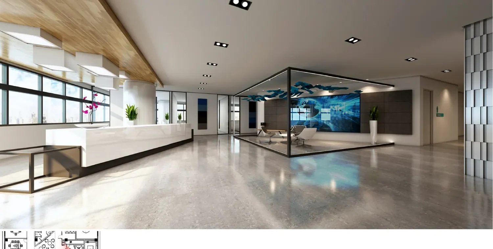

Portfolio / Workplace interior
Workplace interior and furniture presentation.
Selected workplace visuals created to communicate interior atmosphere, furniture direction and important spatial moments within a commercial design proposal.

What the images communicate
The selected view balances the arrival experience, seating arrangement, lighting character and material transitions in one readable composition. For workplace presentations, this type of image helps reviewers discuss how formal reception functions and informal waiting areas relate before decisions move into detailed documentation.
Information and confidentiality
Identifying project information has been removed. The published material is a selected part of a design presentation rather than a complete drawing or visualization package, and it does not represent a completed built project. A new commission would begin with the current plans, furniture intent, finish references, view list and review milestones.
For comparable work, review our 3D interior rendering service and support for interior design studios.